Uživatelské rozhraní a navigace¶
Ethos lze obsluhovat výhradně pravým rotačním enkodérem (otáčením se
posouvá zvýraznění, stiskem se provede ENT) a klávesou RTN pro opuštění
menu — dotyková obrazovka, pokud je k dispozici, je pouze zkratkou ke
stejným akcím, nikoli samostatným způsobem práce. MDL, DISP a SYS
přejdou přímo do Nastavení modelu, Konfigurace obrazovek a Nastavení
systému (tytéž tři dlaždice jako ve spodní liště); dlouhý stisk RTN
odkudkoli se vrátí přímo na domovskou obrazovku.
Menu resetu¶
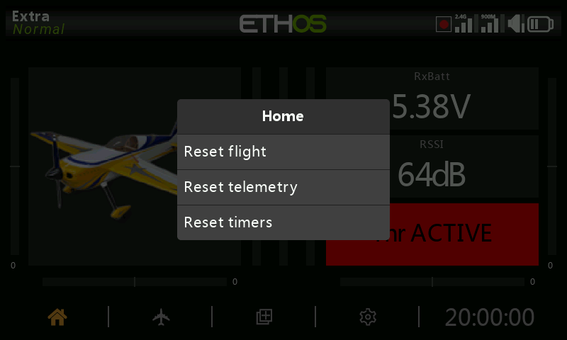
Dlouhý stisk ENT na domovské obrazovce otevře menu resetu:
- Reset letu — resetuje telemetrii, časovače a funkční přepínače a znovu spustí předletový kontrolní seznam.
- Reset telemetrie — resetuje pouze telemetrii.
- Reset časovačů — resetuje pouze časovače.
- Uzamknout dotykovou obrazovku — dostupné také současným stiskem
ENT+PAGEna jednu sekundu na domovské obrazovce, nebo jako spouštěč speciální funkce.
Ovládací prvky pro editaci¶
Přidávání funkčních prvků — časovač, logický přepínač, speciální
funkce, křivka nebo proměnná se vytvoří klepnutím na + vedle záhlaví
sloupců v příslušném menu. Na vysílači bez dotykové obrazovky zvýrazněte
existující prvek, stiskněte ENT a z menu vyberte Přidat — tato volba
je dostupná i na dotykových vysílačích.
Virtuální klávesnice¶
Dotykem jakéhokoli textového pole (nebo stiskem ENT na něm) se otevře
klávesnice na obrazovce. Klávesa backspace maže vlevo od kurzoru; PAGE
maže vpravo a jakmile kurzor dosáhne konce textu, pokračuje v mazání
zleva. Dotykem samotného pole se kurzor přesune na danou pozici — nebo
použijte SYS/DISP pro posun vlevo/vpravo bez dotyku. Klávesa
?123/abc přepíná numerickou klávesnici (která obsahuje také
speciální znaky):
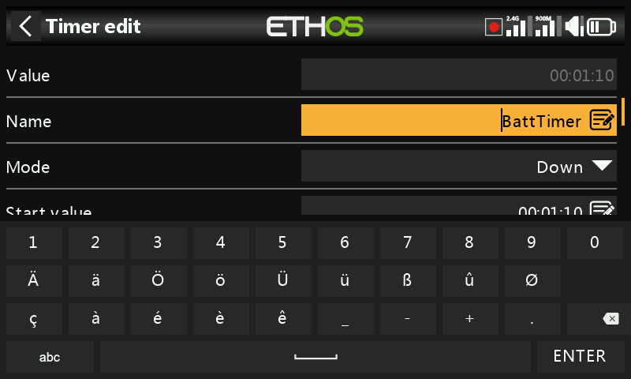
Na vysílači bez dotykové obrazovky stisk ENT na textovém poli přejde
přímo do režimu editace: otáčením enkodéru se prochází malá písmena, velká
písmena, číslice a nakonec speciální znaky, přičemž stiskem ENT se každý
znak vloží. MDL přepíná velikost znaku bezprostředně vpravo od kurzoru (a
každý další zapsaný znak zůstane v této velikosti, dokud ji znovu
nepřepnete). PAGE maže vpravo od kurzoru; SYS/DISP jím posouvají
vlevo/vpravo.
Ovládací prvky číselných hodnot¶
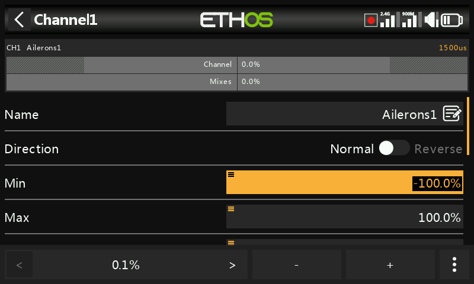
Dotykem číselného pole se ve spodní části obrazovky otevře ovládací lišta:
</> mění velikost kroku (cyklicky mezi dekádami — např.
0,01/0,1/1,0/10,0), -/+ (nebo rotační enkodér) upravují hodnotu
o tento krok a Více otevře další možnosti:
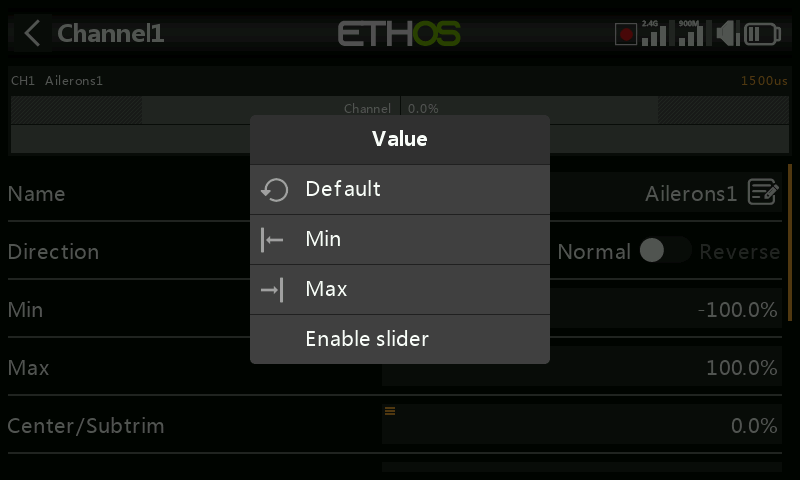
- Přejít na výchozí hodnotu pole
- Nastavit na minimum / nastavit na maximum
- Nahradit krokování posuvníkem
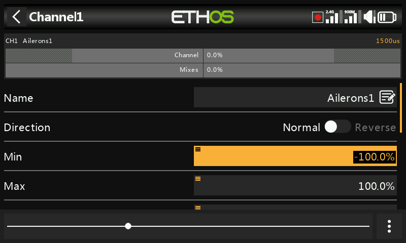
Posuvník (nastavitelný také rotačním enkodérem) je rychlejší pro hrubé změny; Vypnout posuvník vrátí krokování. Hodnoty rozsahu telemetrie se upravují stejným způsobem:
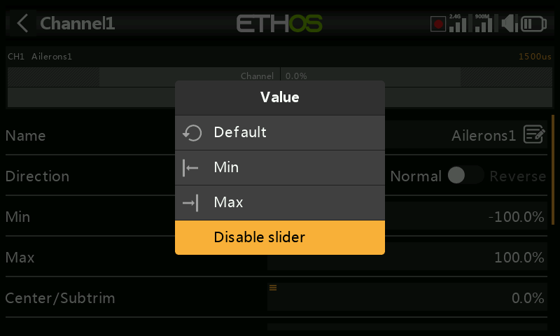
Funkce Options¶
Téměř všude, kde se očekává hodnota nebo zdroj,
otevře dlouhý stisk ENT dialog Options — příznakem toho, že je
dostupný, je malá ikona menu („hamburger“) v levém horním rohu pole.
Možnosti hodnoty¶
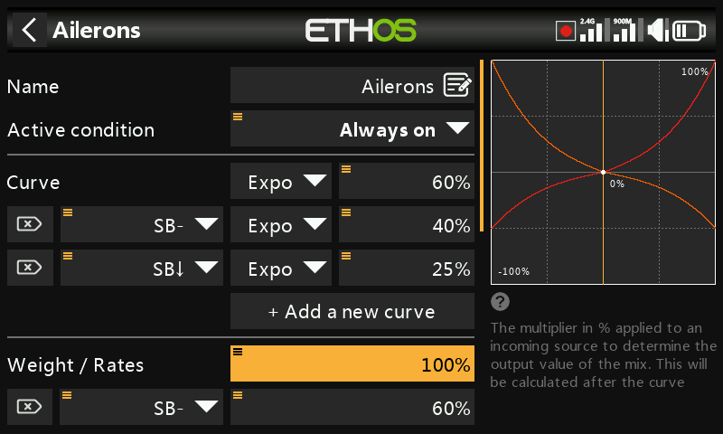
Dialog možností hodnoty pojmenuje upravovaný parametr a nabízí volbu mezi fixním minimem/maximem nebo jeho řízením ze zdroje (např. z potenciometru, pro úpravu hodnoty za letu). Pokud pole již zdroj používá, tentýž dlouhý stisk namísto toho nabídne převod aktuální hodnoty tohoto zdroje na fixní hodnotu:
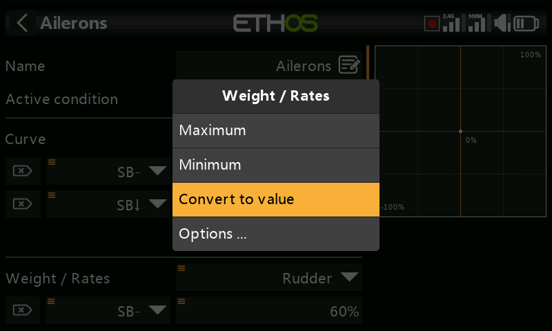
Volba zdroje¶
Volba Choose a source otevře dvousloupcový výběr — nejprve kategorii (analogové vstupy, přepínače, logické přepínače, trimy, kanály, osa gyroskopu, kanál trenéra, časovač, telemetrický senzor nebo několik speciálních hodnot), poté konkrétní člen dané kategorie:
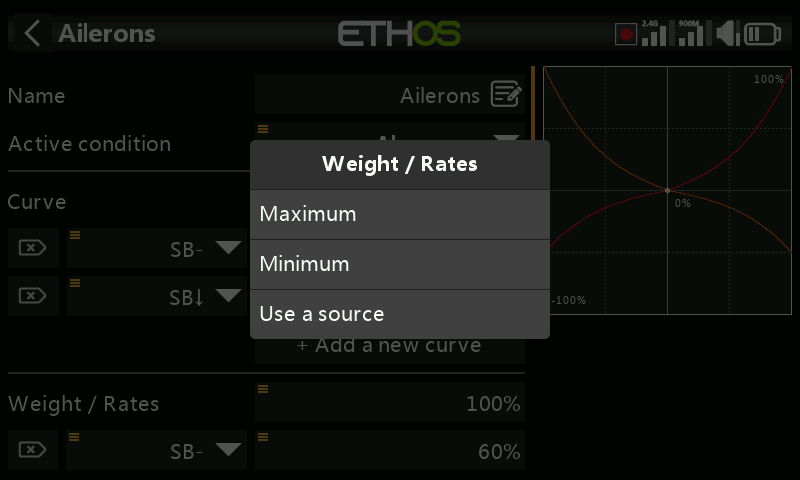
Po nastavení zdroje otevře tentýž dlouhý stisk možnosti specifické pro daný druh zdroje:
Jakýkoli zdroj —
- Invert — invertuje zdroj (např. aktivní, když přepínač není nahoře, namísto když je).
- Edge — spustí se jednorázově při přechodu (false→true nebo
true→false), místo aby zůstal aktivní po celou dobu daného stavu; u zdroje
se zobrazuje s předponou
†. Dostupné obecně u přepínačů a konkrétně u spouštěcí podmínky logického přepínače typu Sticky.
Zdroje typu páčka — možnosti ve stylu kalibrace/subtrimu:
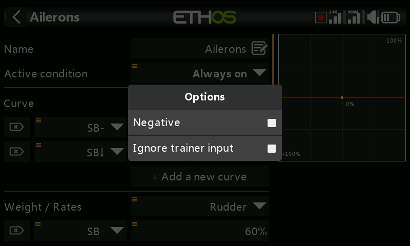
Zdroje typu přepínač —
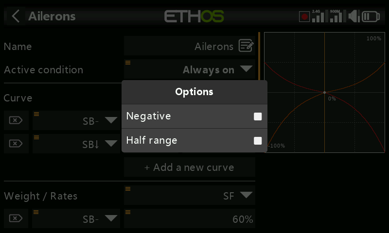
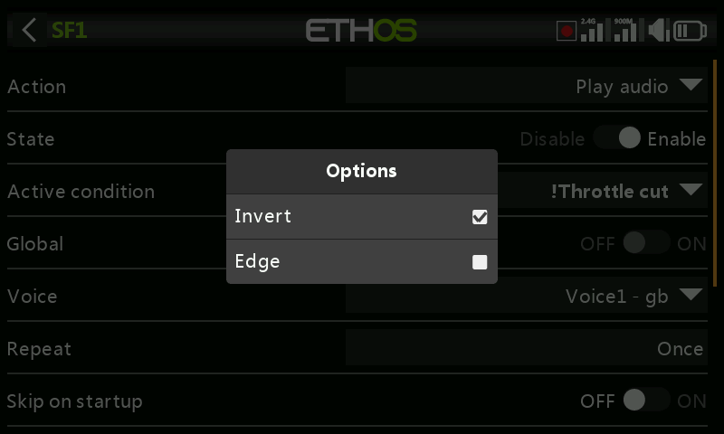
- Negative — invertuje funkci přepínače.
- HalfRange — u dvoupolohového přepínače nebo logického přepínače mění jeho výstupní rozsah z ±100 % na 0–100 %.
Zdroje typu trim —
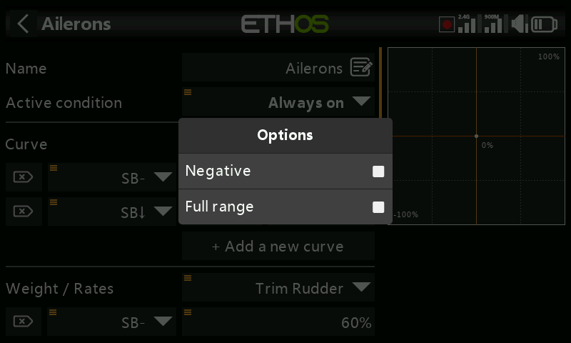
- Negative — invertuje funkci trimu (užitečné v akcích volného mixu).
- Full range — trimy mají výchozí rozsah ±25 %; jako zdroj jej lze rozšířit na ±100 %.
- Ignore trainer input — u logického přepínače vylučuje pohyb ze vstupu trenéra ze spouštění přepínače. Typické použití: detekce pohybu vlastní páčky učitele (např. pro okamžitý zásah, pokud žák udělá chybu) bez toho, aby jej spouštěly i vstupy žákových páček.
Zdroje typu proměnná —
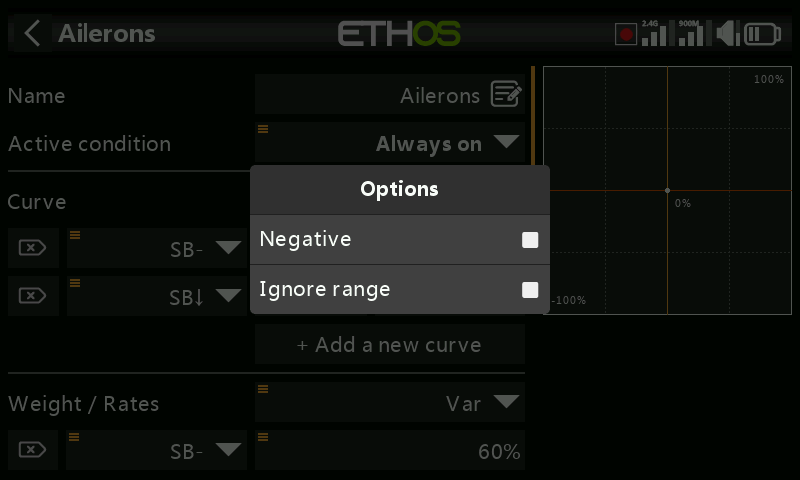
- Negative — neguje hodnotu proměnné pro toto použití.
- Ignore range — některá pole mají nesymetrické rozsahy (např. Min/Max ve Výstupech, které jsou −150–0 %, resp. 0–150 %). Pokud proměnná použitá jako zdroj daného pole nemá naprosto stejný rozsah, zapněte tuto volbu, abyste přeskočili automatický převod rozsahu v Ethos a vyhnuli se neočekávaným hodnotám.
Zdroje typu telemetrický senzor — redukují zdroj na jeho aktuální minimum nebo maximum namísto okamžitého odečtu (některé senzory k tomu přidávají další možnosti specifické pro daný senzor):
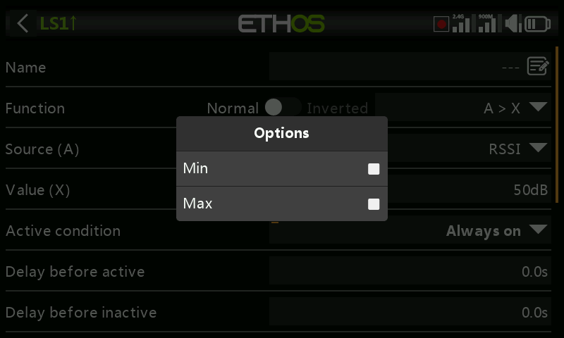
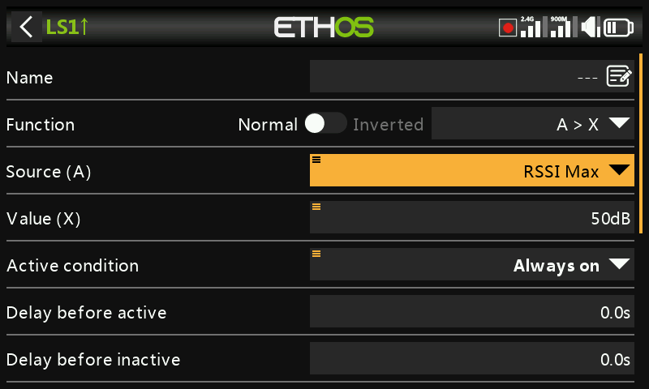